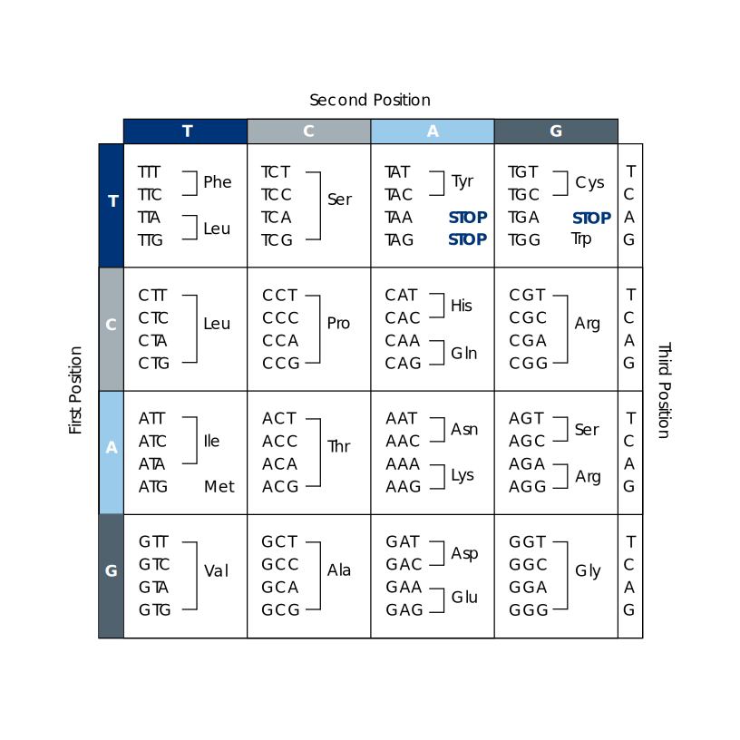

How DNA makes proteins
DNA comprises a backbone of the sugar deoxyribose that holds
in place a series of nucleotide bases,
typically referred to by their initial letters:
adenine (A), cytosine (C), guanine (G) and thymine (T).
A sequence of three bases forms a codon, which
encodes a specific amino acid.
Notice that the base in the third position of a codon is often
redundant – this base can often be changed without affecting
the translation.

Some sections of DNA encode genes.
In animals, genes start with an ATG codon, and end
with one of three "STOP" codons.
An enzyme, RNA polymerase, binds to the start codon (perhaps
with the help of transcription factors that bind to the DNA
sequence before the start of the gene) and makes
messenger RNA copies of the nucleotide sequence.
Ribosomes then bind to the start of the mRNA
sequences and work their way along.
At each codon position, they bind the corresponding amino acid
to a growing chain. When they reach the STOP codon at the end
of the mRNA sequence, the completed amino acid sequence folds
to form a protein, often with a complex three-dimensional
structure.
Mutations cause changes to individual nucleotide bases within
a DNA sequence – or may cause bases to be added or lost.
What impact might mutations have on the resulting protein?
- Changing an individual base
- Think about the specific codons
TTG and TGT
-
If the base is in the third codon position, often there will be no effect.
Some first-position changes have no effect, too.
Changes in the second position usually change the amino acid.
Amino acids with similar chemical properties often share similar codes –
but a change in an amino acid in the active site of an enzyme could
render the protien non-functional.
Cystine (Cys) contains sulfur and forms strong S-S bonds that often
control how a protein folds; removing these structural elements may be
more catastrophic than swapping two amino acids with similar chemistry.
- Adding a new base
-
This will shift the reading frame; every codon after the insertion will encode a different amino acid.
This is likely disastrous for the protein, as the sequence of amino acids will be essentially random.
- Losing a series of bases
- If the number of bases lost is a multiple of three, the odds of a functional output are higher, as the reading frame is not shifted.
Deleterious mutations – those that decrease the fitness of an
individual – are unlikely to persist in the gene pool.
Hence the rate at which (germ line) mutations occur is higher
than the rate at which persistent mutations are added
to the gene pool of a population or species.
If this latter rate is approximately uniform over time, we might
in principle use it to deduce how recently two lineages diverged.